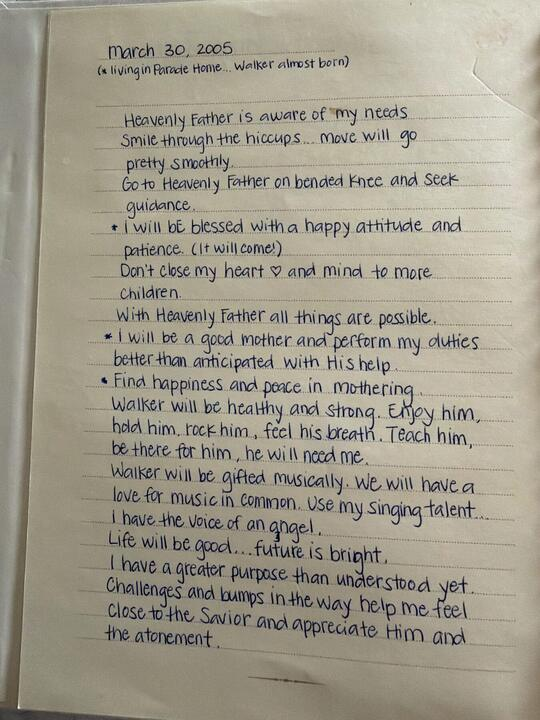
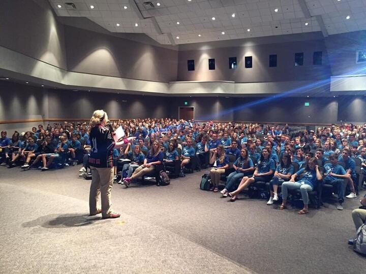
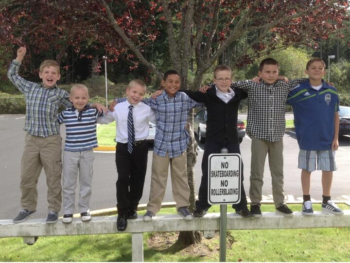

The companion to Rob McFadden's book about his son Walker. Every code printed in the book opens the moment you were just reading about — the photograph, the home video, the thing that actually happened.
The site follows the book exactly. Start anywhere, or let a code in the margin bring you straight to the moment on the page in front of you.

Who he was, and the seven places the family called home.
The house Rob and Walker were building together.
The fog, the fork in the road, and what came after.

What he is doing now, and the next chapter.

“That coming Saturday, there were about 40 people at Walker's baptism. Roughly half of them came from his football team, coaches, teammates, and their parents, somewhere around 20 in all, there to support an 8-year-old boy on the most important day of his young life.” Chapter ThreeOpen this moment →
A small code sits in the margin, next to the story it belongs to.
The phone camera reads it. No app, no account, nothing to install.
Every code points at a permanent address, so the book never goes stale.
“Grief is like that. The sorrow and the peace are not two separate feelings competing for the same heart.”
“They are the two poles of a single love.”
From the introduction to Polarity of Grief.